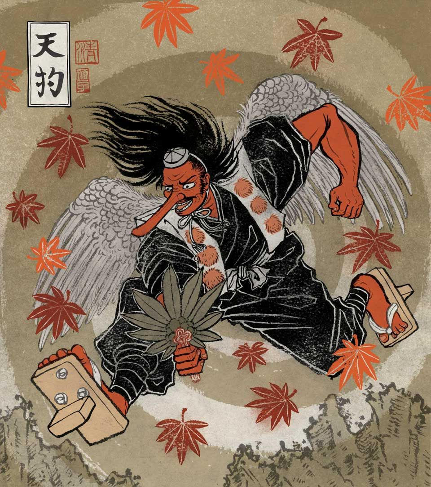
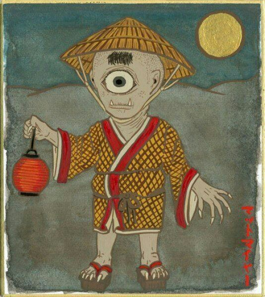
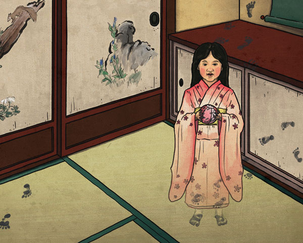
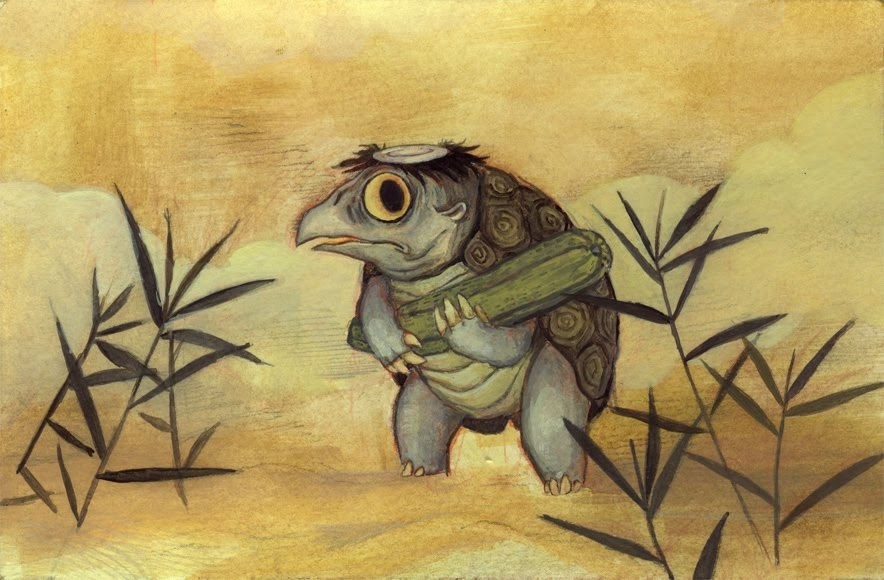
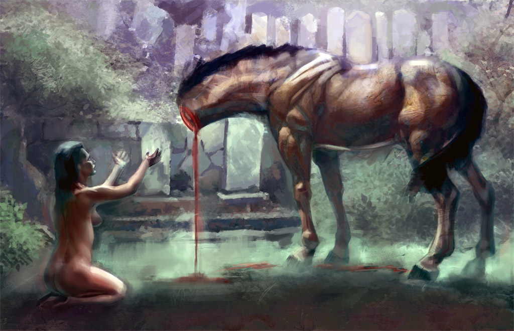

Ёка́й (яп. 妖怪 ё:кай) — сверхъестественное существо японской мифологии, разновидность обакэ. В японском языке слово «ёкай» имеет очень широкое значение и может обозначать практически все сверхъестественные существа японской мифологии, или даже заимствованные из европейской: от злобных они до кицунэ или снежной женщины Юки-онна.
В японской мифологии часто упоминаются животные, обладающие волшебной силой. Согласно легендам, большинство из них обладает антропоморфными чертами или умеет обращаться в людей (такие оборотни называются хэнгэ). В японских мифах часто встречаются следующие типы таких существ:
Они — это демоны-людоеды. Обычно они отличаются огромными размерами, а также ярко-красной кожей, но встречаются упоминания и о маленьких они. Эти существа умеют обращаться в иных гуманоидных существ и очень любят человеческое мясо.
Цукумогами — это название целого класса существ, которыми, по легендам, могли стать предметы обихода, которым больше ста лет. Это Бакэдзоури (сандалии), Каракаса (старые зонты), Камэоса (фляги для сакэ), Моридзи-но-Кама (чайники).
Юрэй (яп. 幽霊 Ю:рэй, досл. «Потусторонний (неясный) дух», «призрак») — термин в японской мифологии, употребляющийся в частности относительно духов умерших людей. Зачастую безобидные привидения, не причиняющие вреда живым людям. За исключением призраков, исполненных определённых чувств, которые могли бы толкнуть их к превращению в злобного духа, мононокэ.
Мононокэ (яп. 物の怪 Мононокэ, досл. «Воплощённый злой дух», то есть являющийся не призраком, а вполне материальным существом) — существа, куда сильнее обычных ёкаев, так как это люди, или реже — животные, которые обратились в ёкаев под действием тяготящих их чувств, таких как ненависть, злоба, зависть, месть, ревность и др. Мононокэ упоминаются в японской литературе как целый класс существ, обладающих значительной силой, превзойти которую может только Аякаси, являющийся в теории хозяином или властелином мононокэ. Целью мононокэ, зачастую, является банальное убийство людей, являющихся объектом сильных негативных эмоций, пробудивших духа. Иногда мононокэ играют с людьми, обманывая их всяческими образами.
Аякаси (яп. 妖 Аякаси, досл. «Сверхъестественное создание») — дух, появляющийся после кораблекрушения. В современном применении слово является приблизительным синонимом слова «ёкай», или же означает вообще сверхъестественные явления.
| Место обитания | Ёкай | Фото |
|---|---|---|
| Живущие в горах | Тэнгу, ведьма ямауба |  |
| Живущие на обочинах дорог | Хитоцумэ-кодзо, ноппэрапон, микоси нюдо |  |
| Живущие в доме | Дзасики-вараси, кура-бокко |  |
| Живущие в водоёмах | Исо-онна, каппа, нуси |  |
| Меняющие свое местонахождение | Кубикирэ-ума |  |
Введите свои контактные данные
Создать аккаунт